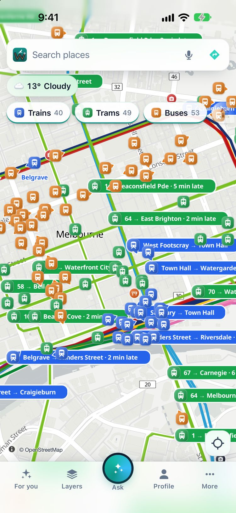

Wayaroo › Danh sách thành phố › Melbourne · English
Tàu, xe điện và xe buýt Melbourne, trực tiếp trên một bản đồ
Wayaroo hiển thị tàu, xe điện và xe buýt đang chạy ở Melbourne trên bản đồ, từ dữ liệu trực tiếp của chính Transport Victoria (Sở Giao thông Victoria). Chạm vào một xe để xem xe đi đâu, trễ bao lâu và các trạm kế tiếp.
Miễn phí. Không cần tài khoản. Mở ngay trong trình duyệt.

Trên bản đồ lúc đó
Lúc 9:00 sáng thứ Sáu, ngày 13 tháng 11 năm 2026 (giờ Melbourne), Wayaroo hiển thị 1.996 xe ở Melbourne trên bản đồ (tàu 251, xe điện 181, xe buýt 1.564).
| Loại | Số xe lúc đó |
|---|---|
| tàu | 251 |
| xe điện | 181 |
| xe buýt | 1.564 |
Cùng nguồn dữ liệu này cũng phủ vùng Victoria. Cùng lúc đó, Wayaroo hiển thị 79 xe ở Geelong, 38 xe ở Ballarat và 30 xe ở Bendigo.
Số xe thay đổi trong ngày. Nguồn: Transport Victoria (GTFS-Realtime, CC BY 4.0).
Bạn có thể làm gì
- Xem xe của bạn ngay bây giờ. Chạm vào một xe để xem tuyến, nơi xe đang đến, các trạm kế tiếp và, khi nhà vận hành gửi dự báo, xe trễ bao lâu.
- Theo dõi xe. Chọn “Đi cùng xe”, bản đồ sẽ luôn theo một xe.
- Thường trễ, thường đầy. Wayaroo học từ dữ liệu trực tiếp xem mỗi tuyến thường trễ bao lâu tại mỗi trạm vào thời điểm đó trong tuần. Hành khách có thể đánh dấu xe điện hoặc xe buýt đã đầy.
- Chỗ giao cắt đường sắt. Khi bạn lái xe, Wayaroo báo trước chỗ giao cắt đường sắt phía trước.
- Khu vực trường học và giới hạn tốc độ. Các khu vực tốc độ của Victoria, với khu vực trường học chỉ vào ngày đi học.
- Hen suyễn do giông bão. Từ tháng 10 đến tháng 12, Wayaroo hiển thị mức nguy cơ chính thức cho khu vực của bạn.
Lên kế hoạch chuyến đi
Lên kế hoạch đi tàu, xe điện và xe buýt bằng công cụ lập lộ trình của chính Wayaroo, bên cạnh các lựa chọn đi ô tô, xe đạp và đi bộ. Mỗi chuyến đi hiển thị giá vé Myki, giá đầy đủ và giá ưu đãi, cùng số phút dư ở mỗi lần đổi xe.
Ưu đãi giá vé Wayaroo hiển thị ở đây: Giảm nửa giá vé tàu, xe điện và xe buýt ở Victoria đến hết năm 2026 (giá vé ngày đầy đủ $5.70). Người dưới 18 tuổi đi miễn phí. (kiểm tra ngày 2 tháng 11 năm 2026; ứng dụng có liên kết đến nguồn.)
Câu hỏi thường gặp
Có bản đồ trực tiếp xe điện Melbourne không?
Có. Wayaroo hiển thị xe điện, tàu và xe buýt Melbourne đang chạy trên cùng một bản đồ. Ứng dụng miễn phí và không cần tài khoản. Mở trong trình duyệt hoặc tải ứng dụng iPhone.
Làm sao xem khi nào xe điện kế tiếp đến?
Mở thẻ “Dành cho bạn”. Các trạm gần bạn nhất ở trên cùng, với các chuyến kế tiếp tại mỗi trạm tính bằng phút. Chạm vào một chuyến để theo dõi xe điện đó trên bản đồ.
Wayaroo có hiển thị giá vé Myki không?
Có. Ở Victoria, công cụ lập lộ trình hiển thị giá vé Myki cho mỗi chuyến, giá đầy đủ và giá ưu đãi. Công cụ cũng hiển thị quy định giá vé đang áp dụng.
Dữ liệu lấy từ đâu?
Từ dữ liệu trực tiếp mở của Transport Victoria (CC BY 4.0). Vị trí xe thường mới trong vòng một phút. Dữ liệu có thể chậm hoặc sai, vì vậy hãy luôn xem bảng thông tin tại trạm.
Wayaroo có miễn phí không?
Có. Wayaroo miễn phí và không cần tài khoản. Cài đặt của bạn được lưu trên điện thoại của bạn.
Miễn phí, không cần tài khoản, 20 ngôn ngữ (có tiếng Việt). Cho iPhone, iPad và Android.
Danh sách thành phố (tiếng Anh)
Wayaroo là ứng dụng độc lập của Ozrsym Pty Ltd. Transport Victoria không vận hành và không xác nhận ứng dụng này. Vị trí và giờ của xe lấy từ dữ liệu của nhà vận hành và có thể chậm hoặc sai. Hãy luôn xem bảng thông tin tại trạm. Danh sách đầy đủ các nguồn: nguồn dữ liệu (tiếng Anh).